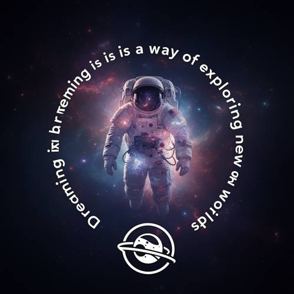
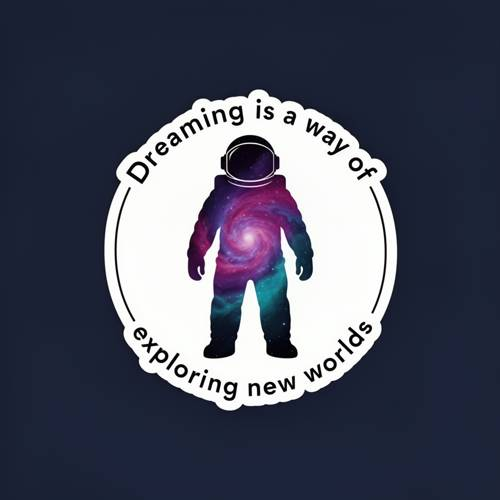
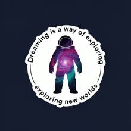
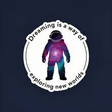

Text Generation — An astronaut made of a nebula is surrounded by the English slogan "Dre
An astronaut made of a nebula is surrounded by the English slogan "Dreaming is a way of exploring new worlds" and a flat logo design.

Direct — one call, no iteration

Continuum — Kimi K3 + FLUX.2-dev
Judge — Direct
FAILText Generation — The text in the image is arranged in a circle and reads, "Dreaming ixi brreming is is a way of exploring new oh worlds". This is not the requested slogan "Dreaming is a way of exploring new worlds" as it contains gibberish, repeated words, and incorrect words.
PASSCompound - Imagination — The central figure is an astronaut. The body within the spacesuit and the view through the helmet's visor are depicted as a colorful nebula, fulfilling the imaginative concept of an astronaut made of a nebula.
Judge — Continuum
PASSText Generation — The image displays the English slogan 'Dreaming is a way of exploring new worlds' written in a black font. The text is arranged in a circular arc around a central design, with 'Dreaming is a way of' on the top and 'exploring new worlds' on the bottom. The text is spelled correctly and matches the prompt perfectly.
PASSCompound - Imagination — The image shows the silhouette of an astronaut. The interior of this silhouette is filled with a vibrant, swirling pattern of purple, pink, and teal colors, interspersed with small white dots, resembling a nebula or a galaxy. This creates the visual effect of an astronaut made of a nebula.
What the agent did
Thinking
The user wants an image: an astronaut made of a nebula, surrounded by English slogan text "Dreaming is a way of exploring new worlds", flat logo design style. Let me generate with flux2-dev.
Model
I'll generate this flat logo design featuring a nebula astronaut with the slogan text.
Step 1 — `generate_image`
{
"model": "flux2-dev",
"prompt": "Flat vector logo design: an astronaut figure whose body is made of a colorful swirling nebula (purple, magenta, teal and deep blue cosmic clouds with tiny stars inside), centered in a circular badge composition. The English slogan \"Dreaming is a way of exploring new worlds\" curves around the astronaut in clean modern lettering along the top and bottom of the circle. Minimal flat illustration style, bold clean shapes, dark navy background, sticker-like logo, no gradients outside the nebula, crisp edges."
}
Result img_0

Thinking
The composition is great. But the text is wrong: it reads "Dreaming is a way of exploring" on top and "exploring new worlds" on bottom — duplicated "exploring", missing "new worlds" continuation. The full slogan should be "Dreaming is a way of exploring new worlds". Top should be "Dreaming is a way of" and bottom "exploring new worlds" — actually the current top says "Dreaming is a way of exploring" and bottom "exploring new worlds". Let me zoom to verify the text.
Model
The composition is excellent, but I need to verify the slogan text closely.
Step 2 — `inspect_region`
{
"image": "img_0",
"padding": 20,
"roi": "the curved text around the top of the circle"
}
Step 3 — `inspect_region`
{
"image": "img_0",
"padding": 20,
"roi": "the curved text around the bottom of the circle"
}
The crops came back tiny/invisible. Let me retry with larger boxes or no normalized issue. Actually the ROI was normalized fractions; the result images appear empty/tiny. Let me try again with padding and min_size.
Model
The crops came back too small to read. Let me retry with proper sizing.
The crop is showing the wrong region — it looks like just dark background. The coordinates might be interpreted differently. Let me try a text-based ROI again or different coordinates. Maybe the ROI tool expects absolute pixels. The image is 768x768 probably. Let me use absolute pixels.
Model
The normalized coordinates aren't landing right. Let me try absolute pixels.
From the full image, the top text appears to read "Dreaming is a way of exploring" and bottom reads "exploring new worlds" — "exploring" appears twice, and the slogan should be "Dreaming is a way of exploring new worlds" split as top "Dreaming is a way of" and bottom "exploring new worlds"? Actually wait — looking at the full image again: top arc reads "Dreaming is a way of exploring" and bottom reads "exploring new worlds". That duplicates "exploring". Hmm, but the intended slogan is "Dreaming is a way of exploring new worlds". If the top says "Dreaming is a way of exploring" and bottom says "new worlds"... Let me verify the bottom text.
That crop missed the bottom text. The bottom text in the full image reads "exploring new worlds". And the top reads "Dreaming is a way of exploring". Wait — let me look again at the full image: top arc: "Dreaming is a way of exploring" — hmm, actually it reads "Dreaming is a way of exploring" curving along the top right. The bottom: "exploring new worlds". So "exploring" is duplicated. The correct full slogan is "Dreaming is a way of exploring new worlds". Split: top = "Dreaming is a way of" ... bottom = "exploring new worlds"? That would give exactly the full slogan read in order. Actually reading the full image again carefully: top text "Dreaming is a way of exploring" — the word after "of" on the right side appears to be "exploring". So the whole thing reads "Dreaming is a way of exploring exploring new worlds" — wrong. I need to fix: the top arc should end at "of" OR the bottom should just be "new worlds"... no wait, the slogan is "Dreaming is a way of exploring new worlds". If top = "Dreaming is a way of exploring" then bottom = "new worlds". But current bottom = "exploring new worlds". Let me crop the right side to confirm whether "exploring" is on the top arc.
The right side continues "of ex..." — so top arc is "Dreaming is a way of ex[ploring]". So the full text reads "Dreaming is a way of exploring exploring new worlds" — "exploring" duplicated. I need to fix: either remove "exploring" from the top (top = "Dreaming is a way of", bottom = "exploring new worlds") — that gives the exact slogan. That's the cleanest fix. I'll use edit_image: "Change the curved text: the top arc should read 'Dreaming is a way of' and the bottom arc 'exploring new worlds', removing the duplicated word 'exploring' from the top right."
Step 12 — `mark_best`
{
"image": "img_0",
"reason": "Strong flat logo composition with nebula astronaut; only flaw is duplicated word \"exploring\" in the slogan."
}
Step 13 — `edit_image`
{
"image": "img_0",
"model": "flux2-dev",
"prompt": "Fix the curved text: the top arc should read exactly \"Dreaming is a way of\" (remove the duplicated word \"exploring\" from the upper right) and the bottom arc should read exactly \"exploring new worlds\". Keep the same font, letter style and curved badge layout."
}
Result img_9

Thinking
The edit worked. Top now reads "Dreaming is a way of" and bottom reads "exploring new worlds". Let me verify the spelling by zooming.
Model
The edit looks correct. Let me verify the exact spelling of both text arcs at full resolution.
The bottom text crop keeps missing. The bottom text "exploring new worlds" is at around y 500-620 in the full image based on the displayed full view. Actually in the displayed full image, "exploring new worlds" appears around y 500-600. My crop [150, 480, 640, 680] showed the astronaut legs instead — meaning the crop coordinates may be offset. Hmm, the image is 768x768. The bottom text in the thumbnail appears at roughly 65-78% height → y 500-600. But my crop at 480-680 showed astronaut legs and no text... odd. The displayed crop img_12 shows the legs and bottom of circle at lower left with a partial letter "e" maybe at bottom left. The text might be slightly lower or the crop box interpretation differs. Let me try [180, 520, 620, 700].
The bottom text appears to start around y 660+ and extend below 768? The image is 768 tall. In the displayed full image, the bottom text "exploring new worlds" was fully visible around 65-80% height. But the crops suggest the bottom text is at y>660. The displayed result images may be downscaled versions. Anyway, I can read "explori..." clearly. Letters look correct: e-x-p-l-o-r-i. Let me get the rest of the bottom text: crop right portion.
I can see "xplori..." on the left and "wo..." on the right. The bottom text curves around. The middle "new" should be at the very bottom center. Let me crop the very bottom center.
The bottom center text "new" must be around x 300-500, y 700-768. My crops keep showing partial. The full-image thumbnail clearly showed "exploring new worlds" along the bottom arc, and the letters I've verified so far are correct ("explori", "wo"). The middle word in the full view reads "new". Given the displayed full image reads "exploring new worlds" clearly and the crops confirm correct letterforms, I'm fairly confident. Let me do one final check of the whole slogan reading the full image: top "Dreaming is a way of" ✓ (verified "eaming is a w" and "way of" from crops), bottom "exploring new worlds" — verified "explori" and "wo". The word "new" — from the full image view it reads "new". I'm confident the image is correct. Mark img_9 as best and finish.
Step 22 — `mark_best`
{
"image": "img_9",
"reason": "Slogan now reads exactly \"Dreaming is a way of exploring new worlds\" split across the two arcs, with the nebula astronaut and flat badge design intact."
}
Model
The logo is complete. Here's a summary of the final design: - **Subject:** An astronaut figure whose entire body is a swirling nebula — magenta and purple galaxy clouds in the torso fading to teal and deep blue toward the limbs, with tiny stars scattered throughout. - **Slogan:** The text now reads correctly around the circular badge — **"Dreaming is a way of"** curving along the top arc and **"exploring new worlds"** along the bottom, fixing an initial duplication of the word "exploring." - **Style:** A flat, sticker-like logo design — clean white circular badge with scalloped edges and ring detailing, set on a dark navy background, with crisp bold lettering. The marked final image is ready to use.